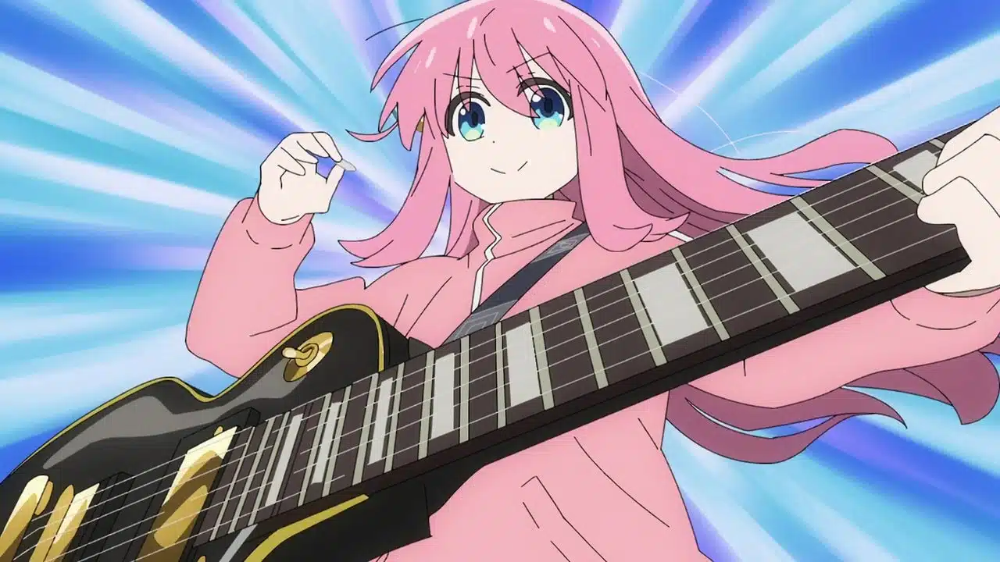

L’histoire suit le quotidien de Gotou Hitori, une lycéenne qui a commencé à apprendre à jouer de la guitare pour réaliser son rêve : faire partie d’un groupe. Malheureusement, la jeune musicienne est bien trop timide et n’a donc pas réussi à se faire un seul ami. Cependant, sa rencontre avec Ijichi Nijika pourrait bien tout changer. En effet, cette dernière est une batteuse et elle est à la recherche d’une guitariste pour son groupe.
faut coder les reufs y'a que moi qui fait les commits la :/
nan parce que là y'a que moi qui code & commit.